|
 |
| РИАЛТРИС (RYALTRIS) mometasone, olopatadine спрей назальный дозир. | ||||||||||||||||||||||||||||||||||||||||||||||||||||||||||||||||||||||||||||||||||||||||||||||||||||||||||||||||||||||||||||||
|
Клинико-фармакологическая группа: Препарат с противоаллергическим и противовоспалительным действием для местного применения в ЛОР-практике Номер и дата регистрации: ЛП-006768 от 09.02.21 Код ATX: R01AD59 |
Владелец регистрационного удостоверения: зарегистрировано Представительство: | |||||||||||||||||||||||||||||||||||||||||||||||||||||||||||||||||||||||||||||||||||||||||||||||||||||||||||||||||||||||||||||
Форма выпуска, состав и упаковка Спрей назальный дозированный в виде гомогенной суспензии белого цвета, без комков.
Вспомогательные вещества: целлюлоза микрокристаллическая и карбоксиметилцеллюлоза натрия, динатрия фосфата гептагидрат, карбоксиметилцеллюлоза натрия, натрия хлорид, бензалкония хлорида 50% раствор (бензалкония хлорид), динатрия эдетат, полисорбат 80, хлористоводородной кислоты 6М раствор, натрия гидроксида 6М раствор, вода д/и. 56 доз - флаконы из полиэтилена высокой плотности (1) с дозирующим устройством, распылительной насадкой и колпачком - пачки картонные×. × с защитными наклейками для контроля первого вскрытия. | ||||||||||||||||||||||||||||||||||||||||||||||||||||||||||||||||||||||||||||||||||||||||||||||||||||||||||||||||||||||||||||||
| ||||||||||||||||||||||||||||||||||||||||||||||||||||||||||||||||||||||||||||||||||||||||||||||||||||||||||||||||||||||||||||||
Описание препарата основано на официально утвержденной инструкции по применению и утверждено компанией-производителем для издания 2022 г. | ||||||||||||||||||||||||||||||||||||||||||||||||||||||||||||||||||||||||||||||||||||||||||||||||||||||||||||||||||||||||||||||
Фармакологическое действие |
Фармакокинетика |
Показания |
Режим дозирования |
Побочное действие |
Противопоказания |
Беременность и лактация |
Особые указания |
Передозировка |
Лекарственное взаимодействие |
Условия хранения и сроки годности |
Условия реализации
Фармакологическое действие
В состав препарата Риалтрис входят мометазона фуроат и олопатадина гидрохлорид, поэтому механизмы действия отдельных компонентов, описанные ниже, применимы к препарату Риалтрис. Данные действующие вещества являются представителями 2 различных классов препаратов (антагонист гистаминовых H1-рецепторов и синтетический ГКС). Мометазона фуроат Мометазон является синтетическим ГКС для местного применения. Оказывает противовоспалительное и противоаллергическое действие при использовании в дозах, при которых не развиваются системные эффекты. Тормозит высвобождение медиаторов воспаления. Повышает продукцию липомодулина, являющегося ингибитором фосфолипазы А, что обусловливает снижение высвобождения арахидоновой кислоты и, соответственно, угнетение синтеза продуктов метаболизма арахидоновой кислоты - циклических эндоперекисей, простагландинов. Предупреждает краевое скопление нейтрофилов, что уменьшает воспалительный экссудат и продукцию лимфокинов, тормозит миграцию макрофагов, приводит к уменьшению процессов инфильтрации и грануляции. Уменьшает воспаление за счет снижения образования субстанции хемотаксиса (влияние на "позднюю" стадию аллергической реакции). Тормозит развитие аллергической реакции немедленного типа (обусловлено торможением продукции метаболитов арахидоновой кислоты и снижением высвобождения из тучных клеток медиаторов воспаления). В исследованиях с провокационными тестами с нанесением антигенов на слизистую оболочку носовой полости была продемонстрирована высокая противовоспалительная активность мометазона как в ранней, так и в поздней стадии аллергической реакции. Это было подтверждено снижением (по сравнению с плацебо) уровня гистамина и активности эозинофилов, а также уменьшением по сравнению с исходным уровнем числа эозинофилов, нейтрофилов и белков адгезии эпителиальных клеток. Олопатадина гидрохлорид Олопатадин является антагонистом гистаминовых H1-рецепторов. Антигистаминное действие олопатадина было показано на изолированных тканях, животных моделях и у людей. Клиническая эффективность (взрослые и подростки с 12 лет) У пациентов с сезонным аллергическим ринитом (САР) препарат Риалтрис по сравнению с плацебо и отдельным применением его компонентов обеспечивал стабильную эффективность в течение 14-дневного периода лечения. Эффективность и безопасность препарата Риалтрис была подтверждена у 278 пациентов с сезонным аллергическим ринитом в открытом рандомизированном исследовании, по сравнению с фиксированной комбинацией мометазона и азеластина. В двойном слепом рандомизированном плацебо-контролируемом исследовании безопасности и эффективности препарата Риалтрис у пациентов с круглогодичным аллергическим ринитом (КАР) было отмечено статистически значимое улучшение в течение 6, 30 и 52 недель применения по сравнению с плацебо. При быстром начале действия (в течение 10 мин после применения) препарат Риалтрис обладает положительным клиническим эффектом и устойчивым во времени ответом - до 14 дней у пациентов с САР и до 52 недель у пациентов с КАР. Дети Эффективность, безопасность и переносимость препарата Риалтрис оценивалась в двойном слепом, рандомизированном плацебо-контролируемом исследовании с участием 446 пациентов от 6 до 11 лет с САР. По результатам исследования Риалтрис был эффективнее и обеспечивал клинически значимые улучшения в отношении назальных симптомов в течение 14 дней терапии в сравнении с плацебо. Безопасность и эффективность препарата Риалтрис у детей до 6 лет при лечении САР и у детей до 12 лет при лечении КАР не были установлены. Фармакокинетика
Всасывание, распределение, метаболизм После повторного интраназального применения препарата Риалтрис путем 2 впрыскиваний в каждый носовой ход (100 мкг мометазона фуроата и 2660 мкг олопатадина гидрохлорида) 2 раза/сут у пациентов с сезонным аллергическим ринитом среднее значение (± среднеквадратическое отклонение) Cmax в плазме крови составляло 9.92 ± 3.74 пг/мл для мометазона фуроата и 19.80 ± 7.01 нг/мл для олопатадина, а средняя экспозиция за весь курс лечения (AUCtau) составила 58.40 ± 27.00 пг×ч/мл для мометазона фуроата и 88.77 ± 23.87 нг×ч/мл для олопатадина. Медиана времени до достижения пиковой экспозиции после однократного применения составляла 1 ч как для мометазона фуроата, так и для олопатадина. Системная биодоступность мометазона фуроата и олопатадина, входящих в состав препарата Риалтрис, после интраназального применения была оценена как сопоставимая с таковой при монотерапии мометазона фуроатом и олопатадином в форме спрея. При интраназальном применении мометазона фуроат обладает низкой системной биодоступностью <1% (при чувствительности метода определения 0.25 пг/мл). Суспензия мометазона очень плохо всасывается из ЖКТ, и то небольшое количество суспензии мометазона, которое может попасть в ЖКТ после впрыскивания в носовой ход, еще до экскреции с мочой или желчью подвергается активному первичному метаболизму. Выведение После однократного интраназального применения комбинации мометазона фуроата и олопатадина средний Т1/2 мометазона фуроата и олопатадина составлял 18.11 и 8.63 ч соответственно. Фармакокинетика у особых групп пациентов Исследования фармакокинетики препарата Риалтрис с участием пациентов особых групп не проводились. Предполагается, что фармакокинетика комбинации мометазона фуроата и олопатадина отражает характерную для каждого отдельно взятого компонента, поскольку было показано, что фармакокинетика комбинированного лекарственного препарата сопоставима с фармакокинетикой его составляющих. Нарушение функции печени Исследования препарата Риалтрис с участием пациентов с нарушениями функции печени не проводились. При однократном ингаляционном применении мометазона фуроата в дозе 400 мкг у пациентов с легким (n=4), умеренным (n=4) и тяжелым (n=4) нарушением функции печени только у 1 или 2 пациентов в каждой группе наблюдалась определяемая Cmax мометазона фуроата в плазме крови (в диапазоне от 50 до 105 пг/мл). Было обнаружено повышение Cmax в плазме крови при увеличении тяжести нарушения функции печени, однако число пациентов с определяемыми уровнями концентрации было небольшим. Для олопатадина печеночный метаболизм является второстепенным путем выведения. Специфические исследования фармакокинетики с изучением влияния нарушения функции печени не проводились. На основании данных об отдельных компонентах коррекция схемы применения препарата Риалтрис у пациентов с нарушением функции печени не требуется. Нарушение функции почек Исследования влияния нарушения функции почек на фармакокинетику мометазона фуроата не проводились. Выраженных отличий средних значений Cmax олопатадина после однократного интраназального применения у здоровых лиц (18.1 нг/мл) и пациентов с легким, умеренным и тяжелым нарушением функции почек (в диапазоне от 15.5 до 21.6 нг/мл) не наблюдалось. Среднее значение плазменной AUC0-12 было в 2 раза выше у пациентов с тяжелым нарушением (КК <30 мл/мин/1.73 м2). У таких пациентов пиковые Css в плазме крови были примерно в 10 раз ниже, чем наблюдаемые после перорального применения более высокой дозы 20 мг 2 раза/сут, которая хорошо переносилась. На основании данных об отдельных компонентах коррекция схемы применения препарата Риалтрис у пациентов с нарушением функции почек не требуется. Возраст Исследования фармакокинетики препарата Риалтрис у пациентов младше 12 лет не проводились. На основании результатов анализа популяционной фармакокинетики у пациентов в возрасте 12 лет и старше возраст не влияет на фармакокинетику мометазона фуроата и олопатадина, входящих в состав препарата Риалтрис. Пол На основании результатов анализа популяционной фармакокинетики пол не влияет на фармакокинетику мометазона фуроата и олопатадина, входящих в состав препарата Риалтрис. Раса На основании результатов анализа популяционной фармакокинетики раса (европеоидная, американские индейцы или коренные жители Аляски, негроидная или афроамериканцы, коренные жители Гавайских островов или других тихоокеанских островов) не влияет на фармакокинетику мометазона фуроата и олопатадина, входящих в состав препарата Риалтрис. Применение у детей Моделирование на основе популяционной фармакокинетической модели показывает, что воздействие у детей после 1 впрыскивания в ноздрю (2 раза/сут) аналогично воздействию у взрослых после 2 впрыскиваний в ноздрю (2 раза/сут) как для мометазона фуроата, так и для олопатадина гидрохлорида после применения препарата Риалтрис. В контролируемых клинических исследованиях было показано, что при интраназальном применении ГКС у подростков возможно замедление темпов роста. Данный эффект наблюдался при отсутствии лабораторных признаков супрессии ГГН-системы, позволяя предположить, что скорость роста является более чувствительным индикатором системного воздействия ГКС у подростков, чем некоторые общепринятые критерии оценки функции ГГН-системы. Отсроченные эффекты такого снижения темпов роста, связанного с применением интраназальных ГКС, включая влияние на рост человека во взрослом возрасте, неизвестны. Потенциальная способность "наверстать" упущенный рост после отмены терапии интраназальными ГКС надлежащим образом не изучалась. Необходимо проведение систематического мониторинга роста подростков, получающих терапию препаратом Риалтрис. Потенциальное влияние продолжительной терапии на рост должно быть сопоставлено с извлекаемой клинической пользой, а также с соотношением пользы и риска альтернативных вариантов лечения нестероидными средствами. Нельзя исключить вероятность задержки роста при применении мометазона фуроата в дозе 50 мкг у восприимчивых пациентов или при его применении в более высоких дозах. Применение у пожилых пациентов В целом на основании данных, полученных при применении препарата Риалтрис у 145 пациентов в возрасте 65 лет и старше по сравнению с более молодыми пациентами в исследовании с плацебо-контролем и активным контролем, безопасность и эффективность не отличались. Показания
Риалтрис облегчает симптомы аллергического ринита, такие как заложенность носа, насморк, чихание, зуд в носу, слезотечение, зуд и покраснение глаз. Режим дозирования
Интраназально. Сезонный и круглогодичный аллергический ринит у взрослых и подростков старше 12 лет Рекомендуемая доза препарата Риалтрис составляет 2 впрыскивания в каждый носовой ход 2 раза/сут. Облегчение симптомов наблюдается через 10 мин после введения первой дозы. Сезонный аллергический ринит у детей с 6 до 11 лет Рекомендуемая доза Риалтрис составляет 1 впрыскивание в каждый носовой ход 2 раза/сут. Особые группы пациентов Эффективность и безопасность препарата Риалтрис у детей до 6 лет при лечении сезонного аллергического ринита и у детей до 12 лет при лечении круглогодичного аллергического ринита не установлены. Способ применения Препарат Риалтрис следует применять только интраназально. Перед каждым применением следует хорошо встряхнуть флакон. Избегайте попадания препарата Риалтрис в глаза или в рот. Флакон с препаратом Риалтрис (рис. 1). 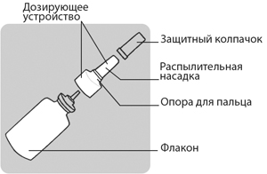 Рис. 1 Подготовка флакона с назальным спреем Перед первым применением препарата Риалтрис хорошо встряхните флакон и заполните дозирующее устройство. Заполнение дозирующего устройства препарата Риалтрис перед первым применением Перед заполнением дозирующего устройства хорошо встряхните флакон. Шаг 1. Снимите защитный пластиковый колпачок с распылительной насадки флакона (см. рис. 2). 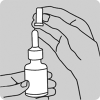 Рис. 2 Шаг 2. Подготовка флакона с препаратом
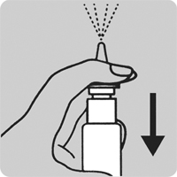 Рис. 3 Теперь флакон готов к использованию. Применение препарата Риалтрис Шаг 3. Осторожно высморкайтесь, чтобы освободить носовые ходы. (см. рис. 4). Рис. 4 Шаг 4. Использование препарата Перед каждым применением (утром и вечером) хорошо встряхните флакон. Крепко удерживайте флакон, поместив указательный и средний палец с двух сторон дозирующего устройства (место опоры для пальца) и упираясь в ребристое дно флакона большим пальцем. (см. рис. 5). 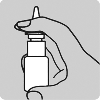 Рис. 5
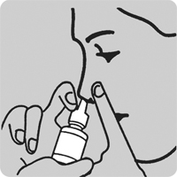 Рис. 6 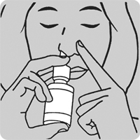 Рис. 7
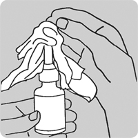 Рис. 8 Придерживая дозирующее устройство, закройте распылительную насадку защитным колпачком, нажав на него до слышимого щелчка (см. рис. 9). 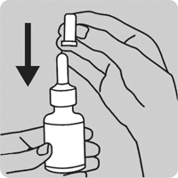 Рис. 9 Как очистить дозирующее устройство препарата Риалтрис при его засорении Не пытайтесь прочистить дозирующее устройство с помощью иглы или других острых предметов. Вы можете повредить дозирующее устройство и получить неправильную дозу лекарственного препарата. Если дозирующее устройство засорилось, аккуратно снимите его, потянув вверх. Снимите защитный колпачок и погрузите дозирующее устройство в теплую воду (см. рис. 10). 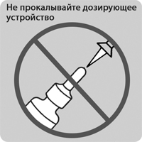 Рис. 10 Если дозирующее устройство засорилось, аккуратно снимите его, потянув вверх (см. рис. 11). 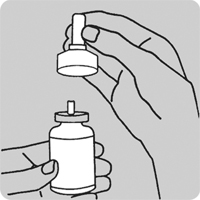 Рис. 11 Снимите защитный колпачок и погрузите только дозирующее устройство в теплую воду (см. рис. 12). 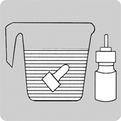 Рис. 12 После замачивания в течение примерно 15 мин промойте дозирующее устройство с двух сторон под струей теплой воды из-под крана в течение 1-2 мин и позвольте ему полностью высохнуть (см. рис. 13). 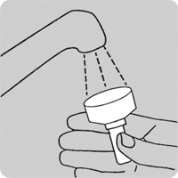 Рис.13 После высыхания снова закройте дозирующее устройство флакона защитным колпачком (см. рис.14). 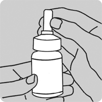 Рис. 14 После очистки обратитесь к приведенному пункту "Заполнение дозирующего устройства препарата Риалтрис перед первым применением" и заново подготовьте дозирующее устройство, сделав 2 распыления. Закройте флакон защитном колпачком. Препарат Риалтрис готов к применению. В случае необходимости повторной очистки снова повторите описанную процедуру. Побочное действие
В продолжительном клиническом исследовании (52 недели лечения) у пациентов с круглогодичным аллергическим ринитом наиболее частыми нежелательными реакциями при применении препарата Риалтрис (≥2% и выше, чем в группе плацебо) были инфекции верхних дыхательных путей, носовое кровотечение, головная боль, дискомфорт в носу, вирусные заболевания верхних дыхательных путей, инфекция мочевыводящих путей, кашель и дисгевзия. Частота определялась следующим образом: очень часто (≥1/10), часто (≥1/100, но <1/10), нечасто (≥1/1000, но <1/100), редко (≥1/10000, но <1/1000), очень редко (<1/10000), частота неизвестна (на основании имеющихся данных оценить невозможно).
* сообщается при приеме ГКС. Описание отдельных нежелательных реакций Нежелательные реакции при применении ГКС При системном и местном применении ГКС возможно развитие следующих нежелательных реакций:
Пациенты детского возраста В исследовании эффективности и безопасности у пациентов от 6 до 11 лет с сезонным аллергическим ринитом наиболее часто регистрируемыми нежелательными реакциями (≥1% случаев) в группе применения препарата Риалтрис являлись дисгевзия (1.3%), головная боль (1.3%) и отклонения результатов при обследовании ЛОР-органов (1.3%). Частота, тип и тяжесть нежелательных реакций, наблюдаемых у пациентов детского возраста, были сопоставимы с таковыми параметрами в популяции взрослых пациентов. Противопоказания
С осторожностью Препарат следует применять с осторожностью при туберкулезной инфекции (активной и латентной) респираторного тракта; нелеченой грибковой, бактериальной, системной вирусной инфекции или инфекции, вызванной Herpes simplex с поражением глаз (в виде исключения возможно назначение препарата при перечисленных инфекциях по указанию врача). Применение при беременности и кормлении грудью
Надлежащим образом спланированные клинические исследования применения препарата Риалтрис, мометазона фуроата или олопатадина у беременных женщин не проводились. Беременность Препарат Риалтрис противопоказано применять во время беременности и у женщин детородного возраста, не использующих методы контрацепции. Младенцы, рожденные от матерей, которые получали ГКС во время беременности, должны тщательно наблюдаться в отношении снижения функций коры надпочечников. Мометазона фуроат. Данные по применению мометазона фуроата у беременных женщин отсутствуют или ограничены. Исследования на животных показали репродуктивную токсичность. Олопатадин. Данные по применению олопатадина у беременных женщин отсутствуют или ограничены. Исследования на животных показали репродуктивную токсичность после системного применения. Период грудного вскармливания Препарат Риалтрис противопоказан в период грудного вскармливания. Мометазона фуроат. Неизвестно, выделяется ли мометазона фуроат с молоком матери. Олопатадин. Имеющиеся данные у животных показали выделение олопатадина с молоком после приема внутрь. Нельзя исключить риск для новорожденных детей/детей младшего возраста. Фертильность Клинические данные о влиянии мометазона фуроата на фертильность отсутствуют. Исследования на животных показали репродуктивную токсичность, но не оказали влияния на фертильность. Клинические данные о влиянии олопатадина на фертильность отсутствуют. Особые указания
Местное назальное действие Имеются сообщения о случаях развития у пациентов изъязвления слизистой оболочки носа и перфорации носовой перегородки после интраназального применения антигистаминных препаратов. Зарегистрированы случаи перфорации носовой перегородки после интраназального применения ГКС. Зарегистрированы случаи носового кровотечения у пациентов после интраназального применения антигистаминных препаратов и ГКС. В связи с ингибирующим воздействием ГКС на заживление ран у пациентов с недавними язвами носовой перегородки, недавно перенесенными операциями в области носа или с травмами носа препарат Риалтрис не следует применять до заживления ран. В клинических исследованиях интраназального применения мометазона фуроата отмечалось развитие локализованных инфекций носа и глотки, вызванных Candida albicans. При развитии таких инфекций может потребоваться применение соответствующих лекарственных препаратов местного действия и прекращение терапии препаратом Риалтрис. Пациенты, использующие спрей Риалтрис в течение нескольких месяцев и более, должны периодически проходить обследование с целью выявления грибковой инфекции или других признаков нежелательных реакций со стороны слизистой оболочки носа. В клинических исследованиях препарата Риалтрис случаи развития грибковой инфекции отсутствовали. Нарушения зрения При применении назальных и ингаляционных ГКС возможно развитие глаукомы, катаракты или редких заболеваний, таких как центральная серозная хориоретинопатия (ЦСХ). Поэтому у пациентов с нарушениями зрения или с повышением внутриглазного давления в анамнезе, глаукомой или катарактой требуется проведение тщательного мониторинга. Реакции гиперчувствительности На фоне интраназального применения мометазона фуроата моногидрата возможно развитие реакций гиперчувствительности, включая случаи бронхообструктивного синдрома. При развитии таких реакций терапию препаратом Риалтрис следует прекратить. Иммуносупрессия Лица, принимающие препараты, угнетающие иммунную систему, такие как ГКС, более предрасположены к развитию инфекционных заболеваний, чем здоровые люди. Например, ветряная оспа и корь могут протекать с осложнениями вплоть до летального исхода, у взрослых и подростков со сниженной иммунной реактивностью, принимающих ГКС. У взрослых и подростков, которые ранее не перенесли эти заболевания или не были вакцинированы должным образом, необходимо соблюдать особую осторожность, чтобы избежать инфицирования. Неизвестно каким образом доза, путь введения и длительность применения ГКС влияют на риск развития генерализованной инфекции. Также неизвестно влияние фонового заболевания и/или предшествующей терапии ГКС. В случае контакта с больными ветряной оспой может быть показана профилактика иммуноглобулином против ветряной оспы. При контакте с больными корью может быть показана профилактика иммуноглобулином человека нормальным для в/м введения. При развитии ветряной оспы может потребоваться терапия противовирусными препаратами. ГКС, при возникновении такой необходимости, следует с осторожностью использовать у пациентов с активным или латентным туберкулезом дыхательных путей, с нелеченными локальными или системными грибковыми заболеваниями или бактериальными инфекциями, системными вирусными инфекциями, паразитарными инвазиями или герпетической инфекцией органа зрения в связи с возможностью ухудшения течения данных заболеваний. Действие на гипоталамо-гипофизарно-надпочечниковую систему (ГГН) При интраназальном применении стероидных препаратов в дозах, превышающих рекомендуемые, или у восприимчивых лиц в рекомендуемых дозах возможно развитие системных эффектов ГКС, таких как гиперкортицизм и угнетение функции надпочечников. В случае таких нарушений дозу препарата Риалтрис следует постепенно снижать в соответствии с принятым порядком отмены терапии ГКС. При совместном применении интраназальных ГКС с другими ингаляционными ГКС может повышаться риск появления признаков и симптомов гиперкортицизма и/или супрессии ГГН системы. Замена системных ГКС на местные может сопровождаться развитием недостаточности функции надпочечников, и у некоторых пациентов могут наблюдаться симптомы отмены (например, боль в суставах и/или мышцах, усталость и депрессия). У пациентов, получавших ранее в течение длительного периода терапию системными ГКС и далее перешедших на терапию местными формами, необходимо проведение тщательного мониторинга для выявления острой надпочечниковой недостаточности в ответ на смену терапии. У пациентов с астмой или другими патологическими состояниями, требующими длительной терапии системными ГКС, слишком быстрое снижение дозы системных ГКС может привести к тяжелому обострению имеющейся симптоматики. Влияние на рост При применении интраназальных ГКС у подростков возможно замедление темпов роста. У подростков, принимающих препарат Риалтрис, рекомендуется систематический контроль роста. Сонливость В клинических исследованиях при применении препарата Риалтрис были зарегистрированы случаи сонливости. Следует воздерживаться от участия в опасных видах деятельности, требующих усиленной концентрации внимания и координации движений, таких как работа с механизмами или управление транспортными средствами. Следует избегать одновременного применения препарата Риалтрис и алкоголя или приема других веществ, угнетающих ЦНС, в связи с усилением вероятности снижения концентрации внимания и ухудшения функции ЦНС. Воздействие вспомогательных веществ Препарат Риалтрис содержит бензалкония хлорид, который может вызывать кожные реакции. Влияние на способность к управлению транспортными средствами и механизмами После применения препарата Риалтрис следует воздержаться от участия в опасных видах деятельности, требующих усиленной концентрации внимания и координации движений, таких как работа с механизмами или вождение транспортного средства. Передозировка
Случаев передозировки при применении препарата Риалтрис не зарегистрировано. Следовательно, данные об эффектах острой или хронической передозировки препарата Риалтрис отсутствуют. В состав препарата Риалтрис входят мометазона фуроат и олопатадина гидрохлорид, поэтому риски, связанные с передозировкой данных веществ при их самостоятельном применении применимы к препарату Риалтрис. Острая передозировка при использовании данной лекарственной формы маловероятна, поскольку 1 флакон препарата Риалтрис содержит около 6 мг мометазона фуроата и 160 мг олопатадина гидрохлорида. Мометазона фуроат При длительном применении ГКС в высоких дозах, а также при одновременном применении нескольких ГКС возможно угнетение функции гипоталамо-гипофизарно-надпочечниковой системы. Вследствие низкой системной биодоступности препарата (< 1%, при чувствительности метода определения 0.25 пг/мл) маловероятно, что при случайной или намеренной передозировке потребуется принятие каких-либо мер помимо наблюдения с возможным последующим возобновлением приема препарата в рекомендованной дозе. В случае передозировки необходимо обратиться к врачу. Олопатадин Симптомы передозировки олопатадина могут включать сонливость у взрослых, а у подростков - возбуждение и беспокойство вначале, а затем сонливость. Специфический антидот олопатадина гидрохлорид неизвестен. При передозировке рекомендуется симптоматическое или поддерживающее лечение с учетом всех параллельно принимаемых препаратов. Не было летальных случаев при интраназальном применении в дозе 3.6 мг/кг (примерно в 6 раз выше, чем МРЧД для взрослых и подростков с 12 лет, и в 7 раз выше, чем МРЧД для детей в возрасте 6-11 лет при расчете мг/м2) у крыс или при пероральном применении у собак в дозе 5 г/кг (примерно в 28000 раз выше, чем МРЧД для взрослых и подростков с 12 лет, и в 33000 раз выше, чем МРЧД для детей в возрасте 6-11 лет при расчете мг/м2). Доза половинной выживаемости при пероральном применении у мышей и крыс, составляла 1490 и 3870 мг/кг соответственно (примерно в 1200 и 6500 раз выше, чем МРЧД для взрослых и подростков с 12 лет, и в 1500 и 7700 раз выше, чем МРЧД для детей в возрасте 6-11 лет при расчете мг/м2 соответственно). Лекарственное взаимодействие
Соответствующие исследования лекарственного взаимодействия препарата Риалтрис не проводились. Предполагается, что все виды лекарственного взаимодействия комбинации мометазона фуроата и олопатадина будут аналогичны таковым при применении каждого из компонентов отдельно, поскольку какие-либо фармакокинетическое взаимодействие между мометазона фуроатом и олопатадином при совместном применении не наблюдалось. Мометазона фуроат В исследованиях у всех испытуемых животных мометазона фуроат, компонент препарата Риалтрис, в основном подвергался интенсивному метаболизму в печени с образованием множества метаболитов. В исследованиях in vitro была подтверждена основная роль цитохрома Р450 CYP3A4 в метаболизме мометазона фуроата. Совместное применение препарата Риалтрис и ингибиторов CYP3A4 может угнетать метаболизм, а также увеличивать системную экспозицию мометазона фуроата и потенциально повышать риск развития нежелательных реакций системных ГКС. В случае необходимости совместного применения препарата Риалтрис и длительной терапии кетоконазолом или другими известными сильными ингибиторами CYP3A4 (например, ритонавиром, препаратами, содержащими кобицистат, атазанавиром, кларитромицином, индинавиром, итраконазолом, нефазодоном, нелфинавиром, саквинавиром, телитромицином) следует соблюдать осторожность. Необходимо сопоставить пользу совместного применения и риск системного воздействия ГКС, при этом за пациентами должно быть установлено тщательное наблюдение для выявления нежелательных реакций системных ГКС. Олопатадин Лекарственное взаимодействие с ингибиторами печеночных ферментов не предполагаются, поскольку олопатадин выводится преимущественно почками. In vitro олопатадин не оказывал ингибирующего влияния на метаболизм специфических субстратов ферментов CYP1A2, CYP2C9, CYP2C19, CYP2D6, CYP2E1 и CYP3A4. В связи с умеренной способностью олопатадина связывать белки (55%) лекарственное взаимодействие, обусловленное вытеснением из связи с белками плазмы, также не ожидается. |
||||||||||||||||||||||||||||||||||||||||||||||||||||||||||||||||||||||||||||||||||||||||||||||||||||||||||||||||||||||||||||||
Вернуться наверх |
||||||||||||||||||||||||||||||||||||||||||||||||||||||||||||||||||||||||||||||||||||||||||||||||||||||||||||||||||||||||||||||
Copyright © Справочник Видаль «Лекарственные препараты в России», Москва, Россия